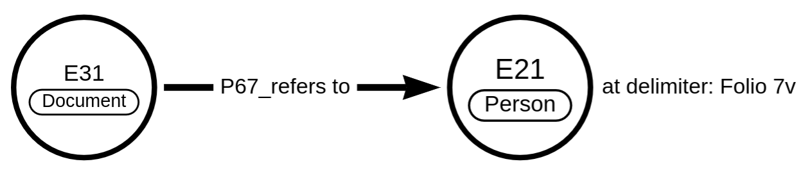
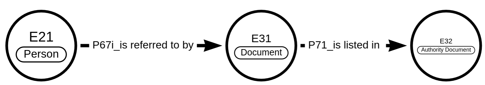

References¶
References¶
OpenAtlas uses P67 (“refers to”) in order to link various entities to references. References can be:
Documents (E31) such as files, bibliographic entities or references like URLs, DOIs, etc.
Linguistic Objects (E33) such as the content of a medieval charter
In order to record which part of the document contains the respective reference a delimiter respectively a certain value to determine the position in the reference, is stored along with the link between the entities. This can be page numbers of a book, chapters, figure numbers etc.
E31(Document) - P67(refers to) - E21(Person) at delimiter: "Folio 7v"
Example: [Book of Kells (E31 Document)] refers to (P67) [Saint Mary (21 Person)] at delimiter: “Folio 7v”
Each reference document is more or less unique and can refer to multiple entities. The distinction is defined by the delimiter value. If the document as a whole refers to the entity, no delimiter is necessary.
Reference Systems¶
Reference systems include sources such as vocabularies, gazetteers, etc. They are considered authority documents (E32).
Users can define a reference system respectively authority document by defining a name, class, and description.
Example:
Name: GeoNames
Class: E32
Description: GeoNames - a geographical database - contains geographical information on all countries and the dataset includes over eleven million place names that are available for download free of charge.
OpenAtlas distinguishes between:
Functional web resources, implemented via an API, etc.
Non-digital respectively non-web-functional resources such as printed encyclopedia, card catalogs, inventory records, etc.
The link between an entity and the Authority Document is stored in the model.link table in the following way:
domain_id: ID of the Authority Document
property_code: P67
range_id: ID of the entity
description: delimiter (alphanumeric)
This combination of E32 and delimiter could furthermore be resolved as E31 Document as it is a unique reference documenting the entity while the E32 alone is the container for all possible references from this authority document.
E21(Person) - P67i(is referred to by) - E31(Document) - P71(is listed in) -
E32(Authority Document)
Example: [Terry Prattchet (21 Person)] is referred to by (P67i) [Q46248 (E31 Document)] is listed in (P71i)[WikiData (E32)]
References and Files¶
Various entities can be connected to files. This is mapped as:
E31 (Document = file) - refers to (P67) - E1
Files can refer to any of the “top level” entities and can (but need not necessarily) be images. Files are stored with a certain system type (i.e. file). If the file is an image, this is most probably a depiction of the entity.
A file can also have a further reference - e.g. the source where the file comes from. This can be a bibliographical reference to the publication where a file (e.g. a scanned image) is extracted from. In this case there is a link between a document E31 with a type “Bibliography” (or sub type) via P67 to another document E31 with a system type “file”. In this case the file is not the depiction of the reference but the reference is the origin of the file. This is mostly needed to document the copyright respectively right holder or source of the file.